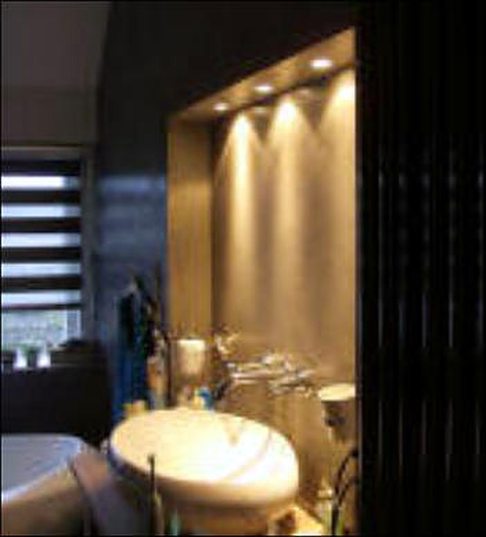
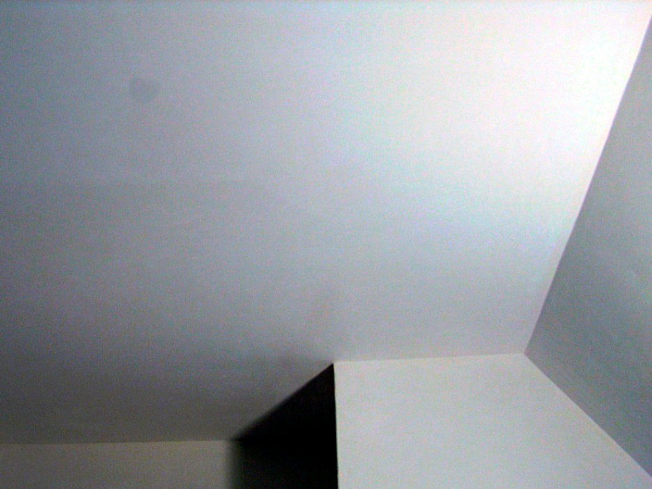
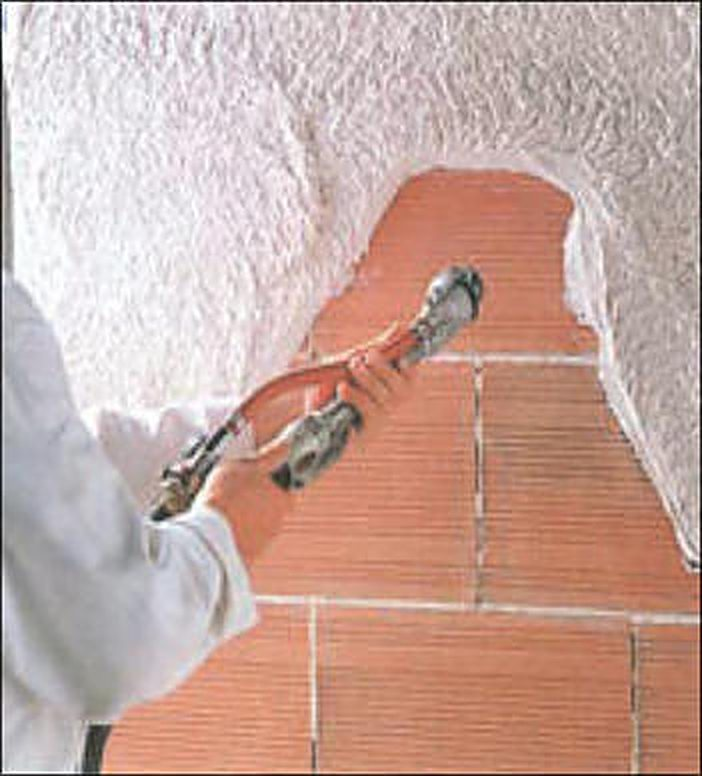
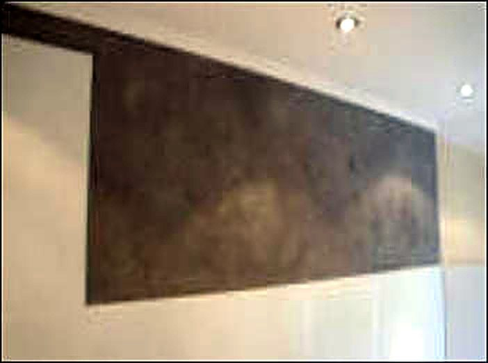
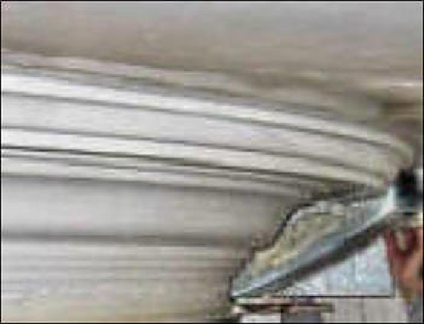

Marmerstuc
Een pleister op basis van kalk, marmerpoeder en natuurlijke mineralen, glad of gestructureerd. Gemakkelijk schoon te maken en heel geschikt voor keukens, badkamers, toiletten, gangen en schouwen.

Van raapwerk en glad pleisterwerk tot marmerstuc, béton ciré en zelf getrokken lijsten. Binnen en buiten.

Ruwe (gemetselde) wanden en plafonds maken we vlak en strak met een laag gipsmortel van 7 millimeter tot 5 centimeter. Door delen dikker of dunner te "rapen" worden scheve muren en plafonds weer recht. Ook rondingen bij openhaarden en trappen, togen en andere ronde profielen.
Een dunne gipslaag op redelijk vlakke wanden of plafonds. Het resultaat is strak en glad: in iedere kleur over te schilderen, of klaar voor behang.
Voor wanden en eventueel ook plafonds. Een aantal kan ook buiten, op de gevel.
Met de spaan aangebracht, in waaiervorm of staand met een structuur als boomschors. Binnen en buiten, over te schilderen met latex.
Voor binnen en buiten, in diverse structuren. Weer- en waterbestendig, ademend en stootvast. Alle kleuren zijn leverbaar.
Decoratieve pleister met een licht korrelige, volle structuur. Reukarm, kras- en stootvast en blijvend elastisch.
Een zijdeglans korrelpleister in diverse kleuren. Een naadloze, decoratieve wandafwerking voor binnen.
Een rustige, gelijkmatige structuur met een vlammend effect. Op het plafond en op de wand.
Een luxe afwerking voor badkamer, keuken en toilet.

Een pleister op basis van kalk, marmerpoeder en natuurlijke mineralen, glad of gestructureerd. Gemakkelijk schoon te maken en heel geschikt voor keukens, badkamers, toiletten, gangen en schouwen.

Een sterke, watervaste cementstuc van 2 mm dik. Voor badkamers, keukens, vloeren, meubels en openhaarden. Kan zonder breekwerk over uw bestaande tegelwerk.

Een mooie overgang tussen wand en plafond. De keuze is enorm, van fijn tot grof en van modern tot barok.
Wilt u een gladde gevel, of zien uw gemetselde buitenmuren er niet meer uit? Dan kan een gestukte muur een uitkomst zijn. Ook sierpleisters brengen we aan op de gevel.
Met de juiste materialen is uw muur goed beschermd tegen weersinvloeden zoals slagregen.
Vertel kort wat u wilt laten doen, binnen of buiten. U krijgt zo spoedig mogelijk antwoord.
Vertel kort wat u wilt laten doen. We nemen zo snel mogelijk contact met u op.
Bel gerust voor een offerte of een vraag over materialen.